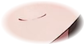

一句话生成
ONE SENTENCE · LIVE
模型 …
语音 …
创作者 —
设置

THINKING
需求单 · 实时
跟真昼说说你想做个什么样的网站。
她问几个问题，这里就会一条一条长出来。
用时
0:00
Token
0
发送
停止
就这样，开始做
在浏览器里全屏打开
重做一版
推上线，分配网址
本地预览
—
刷新
骨架马上就出来…
设置
配置文件 —
创作者姓名（发布归属，必填）
这个名字会被转成拼音当作专属网址前缀，比如「张三」→ zhangsan-1dy4s。
模型密钥 API KEY
只存在本机配置文件里，不会写进生成的网站。
模型端点 API URL
语音密钥 TTS KEY（留空则沿用上面那把）
对话可以换任意 Anthropic 兼容网关，但 T2A 只有 MiniMax 有。 对话换成 Kimi / 智谱之后，这里必须单独填 MiniMax 的 key，否则真昼不会说话。
模型名
大厅地址（产物页脚的两个入口指向这里）
取消
保存